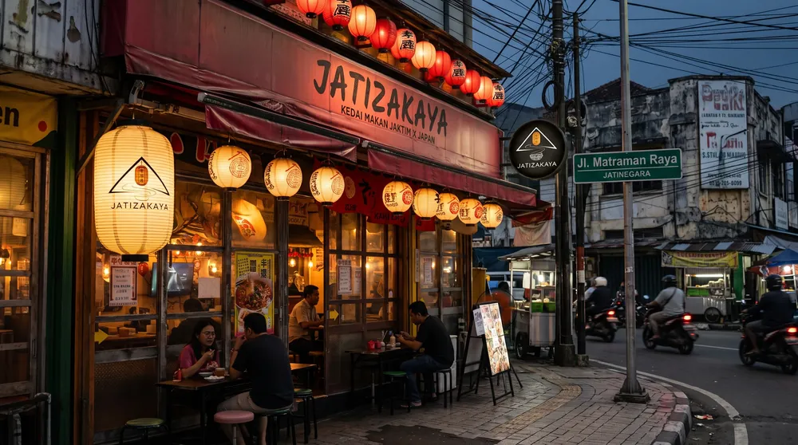
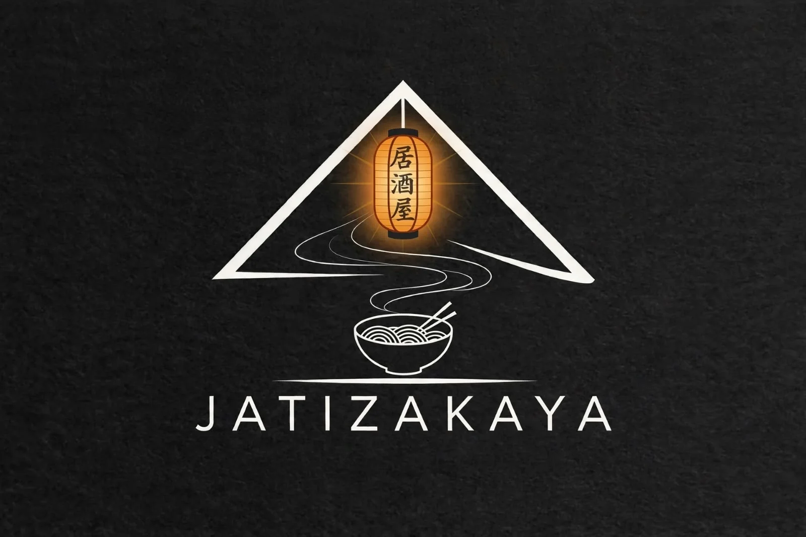

Jatinegara × Izakaya
Izakaya di sudut Jatinegara.
Ramen, yakitori, dan bento dari kedai makan Jaktim × Jepang di Jl. Matraman Raya. Makan di tempat, bawa pulang, atau diantar.

Menu andalan
Favorit kedai
Cerita kedai
Dua kebiasaan, satu meja.
Di Jepang, izakaya adalah tempat singgah: duduk, pesan beberapa piring kecil, lalu mengobrol lama. Jatinegara punya kebiasaannya sendiri: kedai di pinggir jalan, kopi, dan obrolan yang tidak diburu waktu.
Jatizakaya mempertemukan keduanya. Ramen berkuah pekat, yakitori panggang, bento untuk makan siang, dan minuman dingin untuk menutup hari.

Promo
Dua promo, tinggal pakai kode.
Satu kode per pesanan. Kode diterapkan di keranjang dan checkout.
Lokasi & kontak
Mampir ke Matraman Raya.
- Jam operasional
- (tab baru)
- Mau datang ramai-ramai?
- Kirim permintaan reservasi meja